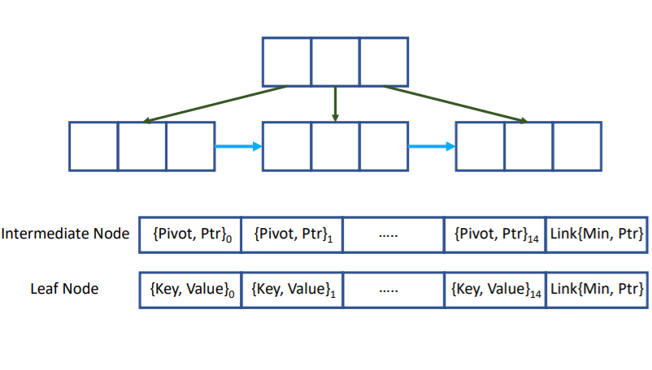

Check my Google Scholar profile.
|  | Engineering a High-Performance GPU B-Tree Muhammad A. Awad, Saman Ashkiani, Rob Johnson, Martín Farach-Colton, and John D. Owens Proceedings of the 24th ACM SIGPLAN Symposium on Principles and Practice of Parallel Programming (PPoPP), February 2019. |
|
|
Spoke-Darts for High-Dimensional Blue-Noise Sampling Scott A. Mitchell, Mohamed S. Ebeida, Muhammad A. Awad, Chonhyon Park, Anjul Patney, Ahmad A. Rushdi, Laura P. Swiler, Dinesh Manocha, and Li-Yi Wei ACM Transactions on Graphics (TOG), July 2018. |
| All-Hex Meshing of Multiple-Region Domains without Cleanup Muhammad A. Awad, Ahmad A. Rushdi, Misarah A. Abbas, Scott A. Mitchell, Ahmed H. Mahmoud, Chandrajit L. Bajaj, Mohamed S. Ebeida Proceedings 25th International Meshing Roundtable (IMR25), 2016. | |
|
|
Disk Density Tuning of a Maximal Random Packing Mohamed S. Ebeida, Ahmad Rushdi, Muhammad. A. Awad, Ahmed H. Mahmoud, Dongming Yan, Shawn English, John D. Owens, Chandrajit Bajaj, and Scott A. Mitchell SGP, 2016. |
| Exercises in High-Dimensional Sampling: Maximal Poisson-disk Sampling and k-d Darts Mohamed S. Ebeida, Scott A. Mitchell, Anjul Patney, Andrew A. Davidson, Stanley Tzeng, Muhammad A. Awad, Ahmed H. Mahmoud, and John D. Owens This is a chapter in the book "Topological and Statistical Methods for Complex Data", August 2014. | |
|
|
Improving Spatial Coverage while Preserving Blue Noise of Point Sets Mohamed S. Ebeida, Muhammad A. Awad, Xiaoyin Ge, Ahmed H. Mahmoud, Scott A. Mitchell, Patrick M. Knupp, Li-Yi Wei Geometric and Physical Modeling 2013 , SIAM GD/SPM '13, November 2013. |
|
|
Sifted Disks Mohamed S. Ebeida, Ahmed H. Mahmoud, Muhammad A. Awad, Mohammed A. Mohammed, Scott A. Mitchell, Alex Rand, and John D. Owens. Computer Graphics Forum (Eurographics 2013), 32(2), May 2013. |